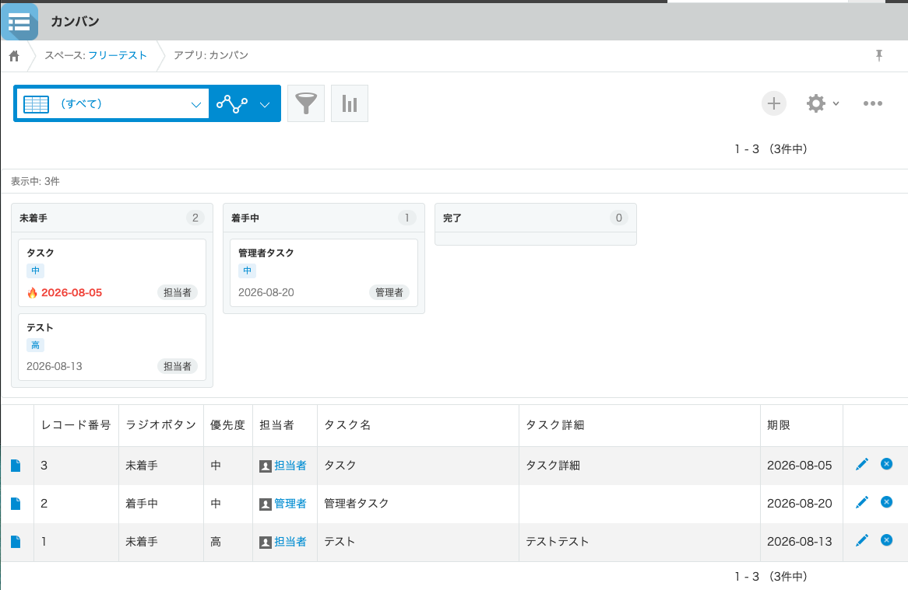
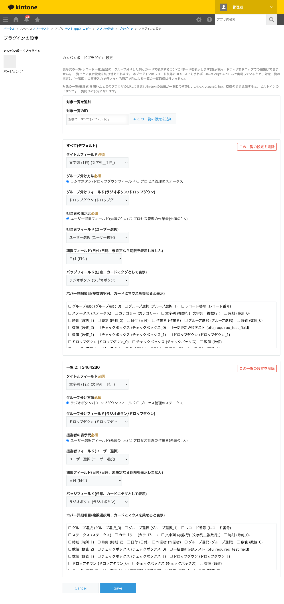

GovAppsプラグイン 安全性を確認できる無料kintoneプラグイン集
レコード一覧画面(表形式)に、列(グループ)とカードで構成するカンバンボードを表示するプラグインです。 グループ分けはラジオボタン/ドロップダウンフィールド、またはプロセス管理のステータスから選べます。 カードには担当者(ユーザー選択フィールドの先頭の1人、またはプロセス管理の作業者)・期限日・任意のバッジを表示でき、 期限を過ぎているカードには🔥マークが自動で付きます。カードをクリックするとレコード詳細画面が別タブで開くため、 ボード側の絞り込みやスクロール位置を失いません。一覧ごとに表示設定を切り替えられ、レコードの取得にREST APIを 一切使わずJavaScript APIのみで実現しているため、表示できるのは一覧の現在ページの件数までです(表示専用、レコードの更新は行いません)。
グループ分け方法に「プロセス管理のステータス」を選ぶと、プロセス管理のステータス定義の並び順どおりに列(未着手・着手中・完了 等)が並びます。各ステータスに何件のレコードがあるかが列ヘッダーの件数バッジで一目でわかります。
プロセス管理を使っていないアプリでも、優先度・カテゴリーなどのラジオボタン/ドロップダウンフィールドをグループ分けに指定すれば、同じようにカンバンボードとして分類表示できます。選択肢の並び順どおりに列が並び、選択肢にない値・未入力のレコードは末尾の「その他」「未設定」列にまとまります。
期限フィールド(日付/日時)を設定すると、カードに期限日が表示されます。今日より前の期限が入っているカードには🔥マークが自動で付くため、対応が遅れているタスクをボードの見た目だけで発見できます。
view=の数字が一覧IDです。対象は通常の一覧(表形式)・PC画面のみです。ボードは一覧本体(表)の上にあわせて表示され、一覧本体自体は非表示になりません。プロセス管理が無効なアプリでは、グループ分け方法・担当者の表示元の「プロセス管理」系の選択肢は選べません。
kintoneセキュアコーディングガイドラインに沿って実装時にチェックしています。特に重要な点は次のとおりです。
app.record.index.showイベントのevent.records(JavaScript APIの一部)のみを使い、対象一覧の指定もREST APIでの一覧列挙を避け一覧IDの直接入力方式にしています。textContentへの代入、またはツールチップ用のtitleプロパティ代入で挿入しており、innerHTMLは一切使用していません。kintone.buildPageUrl('APP_DETAIL', ...)で組み立てたURLをwindow.open(url, '_blank', 'noopener')で開いており、開いたタブから元のタブを操作できないようにしています。詳細な確認項目・確認日は下記GitHubのチェックリストに全項目を掲載しています。


このプラグインは表示専用であり、REST APIを一切実行しません。レコードの取得はapp.record.index.showイベントのevent.records(JavaScript APIの一部)のみを使用します。